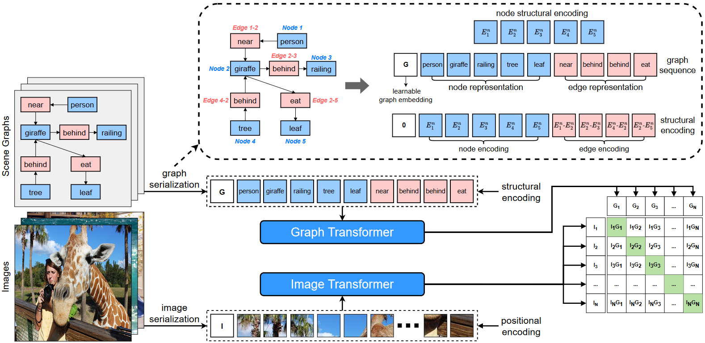
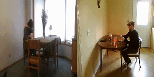
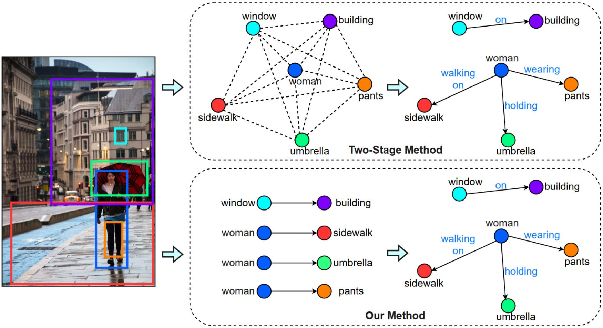
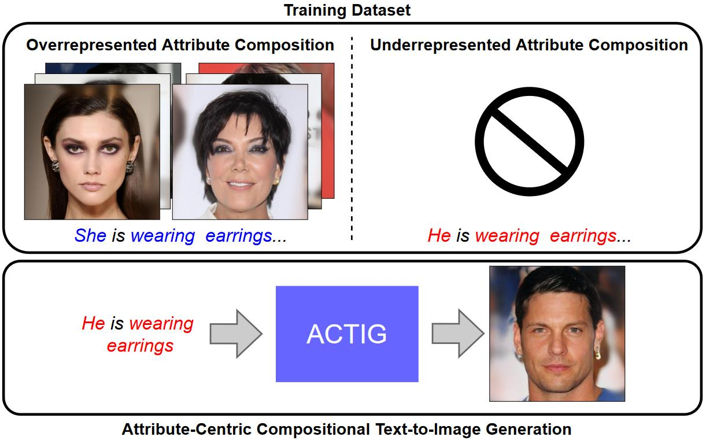
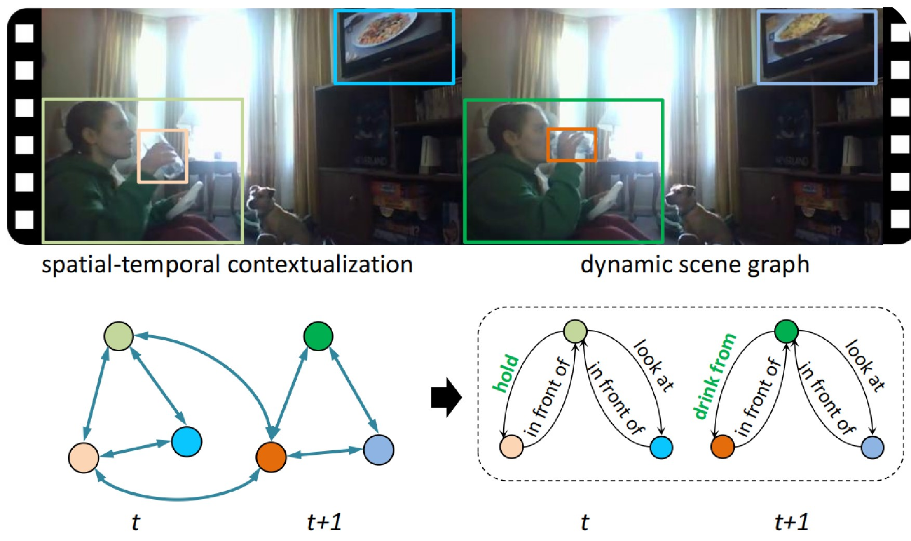
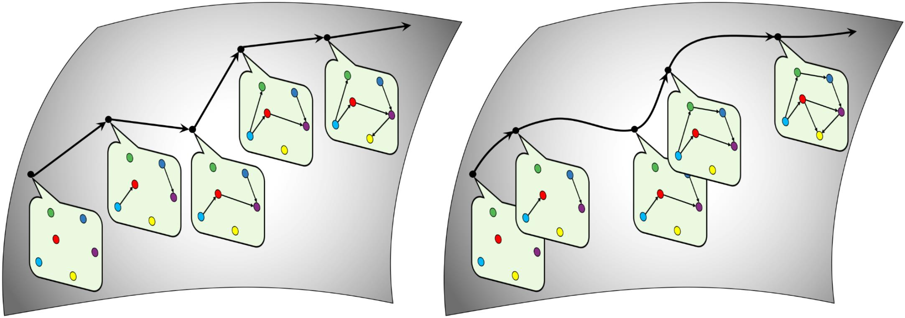

Yuren Cong
I am a fourth-year Ph.D. student at the Institute for Information Processing at Leibniz University Hanover, focusing on scene understanding and generative models. I am advised by by Prof. Michael Ying Yang and Prof. Bodo Rosenhahn. Previously, I obtained the B.Sc. degree from Hefei University of Technology and the M.Sc. degree from Leibniz University Hanover.
My research interest lies in computer vision and graphics:
- Image / Video Understanding
- Image / Video Generation
- Multimodal Learning
- Embodied AI
Please feel free to contact me by email for any questions or collaboration!
Publications

FLATTEN: optical FLow-guided ATTENtion for consistent text-to-video editing
Yuren Cong, Mengmeng Xu, Christian Simon, Shoufa Chen, Jiawei Ren, Yanping Xie, Juan-Manuel Perez-Rua, Bodo Rosenhahn, Tao Xiang, Sen He,
Proc. of the IEEE/CVF International Conference on Computer Vision (ICCV), 2021
Project Page / Code / Video /
Yuren Cong, Mengmeng Xu, Christian Simon, Shoufa Chen, Jiawei Ren, Yanping Xie, Juan-Manuel Perez-Rua, Bodo Rosenhahn, Tao Xiang, Sen He,
Proc. of the IEEE/CVF International Conference on Computer Vision (ICCV), 2021
Project Page / Code / Video /
@article{cong2023flatten,
title={FLATTEN: optical FLow-guided ATTENtion for consistent text-to-video editing},
author={Cong, Yuren and Xu, Mengmeng and Simon, Christian and Chen, Shoufa and Ren, Jiawei and Xie, Yanping and Perez-Rua, Juan-Manuel and Rosenhahn, Bodo and Xiang, Tao and He, Sen},
journal={arXiv preprint arXiv:2310.05922},
year={2023}
}

Learning Similarity between Scene Graphs and Images with Transformers
Yuren Cong, Wentong Liao, Jiawei Ren, Bodo Rosenhahn, Michael Ying Yang,
arXiv.org (under review), 2023
Project Page / Code /
Yuren Cong, Wentong Liao, Jiawei Ren, Bodo Rosenhahn, Michael Ying Yang,
arXiv.org (under review), 2023
Project Page / Code /
@article{cong2023learning,
title={Learning Similarity between Scene Graphs and Images with Transformers},
author={Cong, Yuren and Liao, Wentong and Rosenhahn, Bodo and Yang, Michael Ying},
journal={arXiv preprint arXiv:2304.00590},
year={2023}
}

SSGVS: Semantic Scene Graph-to-Video Synthesis
Yuren Cong, Jinhui Yi, Bodo Rosenhahn, Michael Ying Yang,
Proc. of the IEEE/CVF Conference on Computer Vision and Pattern Recognition (CVPR) Workshops, 2023
Supplemental / Code /
Yuren Cong, Jinhui Yi, Bodo Rosenhahn, Michael Ying Yang,
Proc. of the IEEE/CVF Conference on Computer Vision and Pattern Recognition (CVPR) Workshops, 2023
Supplemental / Code /
@InProceedings{Cong_2023_CVPR,
author = {Cong, Yuren and Yi, Jinhui and Rosenhahn, Bodo and Yang, Michael Ying},
title = {SSGVS: Semantic Scene Graph-to-Video Synthesis},
booktitle = {Proceedings of the IEEE/CVF Conference on Computer Vision and Pattern Recognition (CVPR) Workshops},
month = {June},
year = {2023},
pages = {2555-2565}
}

Reltr: Relation Transformer for Scene Graph Generation
Yuren Cong, Michael Ying Yang, Bodo Rosenhahn,
IEEE Transactions on Pattern Analysis and Machine Intelligence (PAMI), 2023
Code / Colab /
Yuren Cong, Michael Ying Yang, Bodo Rosenhahn,
IEEE Transactions on Pattern Analysis and Machine Intelligence (PAMI), 2023
Code / Colab /
@article{cong2023reltr,
title={Reltr: Relation transformer for scene graph generation},
author={Cong, Yuren and Yang, Michael Ying and Rosenhahn, Bodo},
journal={IEEE Transactions on Pattern Analysis and Machine Intelligence},
year={2023},
publisher={IEEE}
}

Attribute-Centric Compositional Text-to-Image Generation
Yuren Cong, Martin Renqiang Min, Li Erran Li, Bodo Rosenhahn, Michael Ying Yang,
arXiv.org (under review), 2023
Yuren Cong, Martin Renqiang Min, Li Erran Li, Bodo Rosenhahn, Michael Ying Yang,
arXiv.org (under review), 2023
@article{cong2023attribute,
title={Attribute-centric compositional text-to-image generation},
author={Cong, Yuren and Min, Martin Renqiang and Li, Li Erran and Rosenhahn, Bodo and Yang, Michael Ying},
journal={arXiv preprint arXiv:2301.01413},
year={2023}
}

Spatial-temporal Transformer for Dynamic Scene Graph Generation
Yuren Cong, Wentong Liao, Hanno Ackermann, Bodo Rosenhahn, Michael Ying Yang,
Proc. of the IEEE/CVF International Conference on Computer Vision (ICCV), 2021
Supplemental / Code / Video /
Yuren Cong, Wentong Liao, Hanno Ackermann, Bodo Rosenhahn, Michael Ying Yang,
Proc. of the IEEE/CVF International Conference on Computer Vision (ICCV), 2021
Supplemental / Code / Video /
@InProceedings{Cong_2021_ICCV,
author = {Cong, Yuren and Liao, Wentong and Ackermann, Hanno and Rosenhahn, Bodo and Yang, Michael Ying},
title = {Spatial-Temporal Transformer for Dynamic Scene Graph Generation},
booktitle = {Proceedings of the IEEE/CVF International Conference on Computer Vision (ICCV)},
month = {October},
year = {2021},
pages = {16372-16382}
}

NODIS: Neural Ordinary Differential Scene Understanding
Yuren Cong, Hanno Ackermann, Wentong Liao, Michael Ying Yang, Bodo Rosenhahn,
Proc. of the European Conference on Computer Vision (ECCV) , 2020
Code / Video /
Yuren Cong, Hanno Ackermann, Wentong Liao, Michael Ying Yang, Bodo Rosenhahn,
Proc. of the European Conference on Computer Vision (ECCV) , 2020
Code / Video /
@InProceedings{cong2020nodis,
title={Nodis: Neural ordinary differential scene understanding},
author={Cong, Yuren and Ackermann, Hanno and Liao, Wentong and Yang, Michael Ying and Rosenhahn, Bodo},
booktitle={Computer Vision--ECCV 2020: 16th European Conference, Glasgow, UK, August 23--28, 2020, Proceedings, Part XX 16},
pages={636--653},
year={2020},
organization={Springer}
}